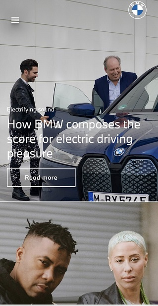
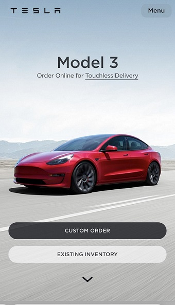
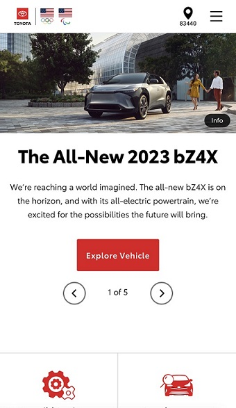

PARC Proximity (BMW)

PARC Proximity is a design principle that is used to describe
the proximity of a design element to the user. This helps to
illustrate relationships among objects: the closer objects
are to each other shows they should be thought of as
related, whereas the farther apart objects are demonstrates
how they should be thought of as separate entities.
Visual Hierachy (Tesla)

Visual hierarchy allows visitors to figure out the most important
elements of a web page without having to read through the page.
Amazon uses this technique in their website. The "Add to Cart" and
"Buy Now" buttons are the main call to actions of a product page,
hence the emphases in color, contrast and size of the buttons
compared to the other elements on the page
White Space and Clean Design (Toyota)

Empty space is not always wasted space. In fact, when it comes to
web design, it's a best practice to give your content a little
breathing room. Burnkit's homepage features lots of whitespace.Each
article is given generous padding, and the user can keep scrolling
to reveal new material.